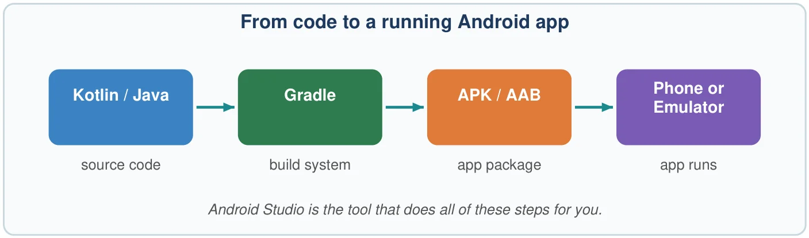
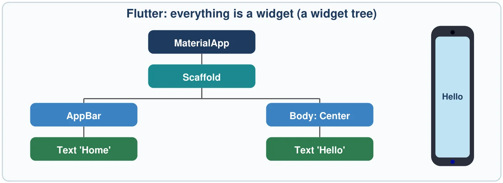

9. Android development: Java, Kotlin and Flutter
This chapter follows the historical and practical path of Android development, from Java to Kotlin to Flutter.
9.1 How an Android app is built
Write code (Kotlin/Java) → Build with Gradle → Create APK / AAB → Run on phone or emulator
- Android SDK: the toolkit with libraries and tools.
- Android Studio: the official IDE (editor, emulator, debugger).
- Gradle: the build system that compiles and packages the app.
- APK / AAB: the app file installed on phones; AAB is used for Google Play.

Figure 9.1: The Android build process
Android Studio is the tool that does all of these steps for you.
9.2 The main parts of an Android app
| Part | Purpose |
|---|---|
| Activity | One screen (or the host for screens) |
| UI (XML or Compose) | How the screen looks |
| Manifest file | App name, permissions, list of screens |
| Resources | Images, strings, colors, themes |
| ViewModel | Holds screen data and logic |
| Room / SQLite | Local database |
| Retrofit / Ktor | Calls APIs over the network |
9.3 Java: the classic
- Original language of Android and still used in many existing apps.
- Huge community, books and tutorials.
- Excellent for learning object-oriented programming.
- Wordier than modern languages and needs extra code to avoid common errors (such as null pointer crashes).
public class Main {
public static void main(String[] args) {
String name = "Dara";
System.out.println("Hello, " + name);
}
}
9.4 Kotlin: the modern Android choice
Kotlin, created by JetBrains, became an official Android language in 2017. Google now recommends a Kotlin-first approach for Android.
- Shorter and easier to read than Java.
- Null safety prevents many crashes.
- Fully interoperable with Java, so old and new code can work together.
- Supports coroutines for smooth background work.
- Also usable for backend (Ktor, Spring) and multiplatform apps.
fun main() {
val name = "Dara"
println("Hello, $name")
}
9.5 Jetpack Compose: the modern UI toolkit
Older Android screens were written in XML files. Jetpack Compose lets you describe the screen directly in Kotlin code, which is shorter and easier to maintain.
@Composable
fun Greeting(name: String) {
Text(text = "Hello, $name")
}
9.6 Flutter: one codebase for many platforms
Flutter is Google's open-source UI toolkit. It uses the Dart language and can build apps for Android, iOS, web and desktop from a single codebase.
- Everything is a widget: text, buttons, layouts and even the whole app.
- Hot reload: see changes on screen in under a second while the app runs.
- Own rendering engine: the same look on every device.
- Rich widget library and a large, growing community.
import 'package:flutter/material.dart';
void main() => runApp(const MyApp());
class MyApp extends StatelessWidget {
const MyApp({super.key});
@override
Widget build(BuildContext context) {
return const MaterialApp(
home: Scaffold(
body: Center(child: Text('Hello, Flutter!')),
),
);
}
}

Figure 9.2: A Flutter widget tree
9.7 Compare the options
| Java | Kotlin + Compose | Flutter (Dart) | |
|---|---|---|---|
| Platforms | Android | Android (and iOS with KMP) | Android, iOS, web, desktop |
| Difficulty | Medium | Medium | Easy to medium |
| Code length | Long | Short | Short |
| UI approach | XML views | Declarative Compose | Declarative widgets |
| Best for | Learning OOP, old projects | Android specialists | Teams needing both platforms |
9.8 Suggested learning order
Programming basics → Kotlin (or Java basics) → Android Studio + Compose → Flutter (optional)
Remember Learning one language well makes the next one easy. Java, Kotlin and Dart share many ideas, so the time you invest in OOP is never wasted.
Review Questions
- Why did Kotlin become popular for Android?
- What does Jetpack Compose replace?
- What does "everything is a widget" mean in Flutter?
- Which language does Flutter use?